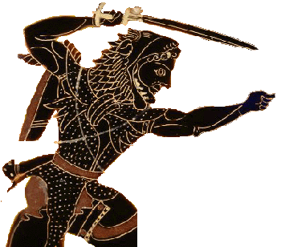

|

|
The most popular of Greek heroes, Hercules (sometimes called "Herakles") was celebrated in stories, sculptures, paintings, and even in the geography of the ancient world.
What stories did the ancient Greeks tell about his life? What were the Labors of Hercules, anyway? Who were the women, both goddesses and mortals, in his life? And where in the ancient world did he travel on his adventures?
Read on, to find out more about Hercules, Greece's greatest hero.
|